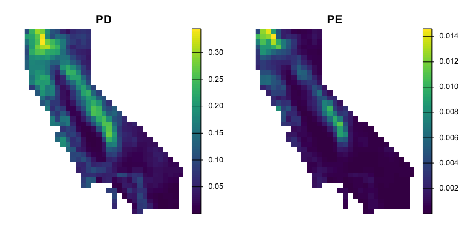
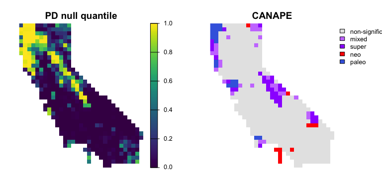
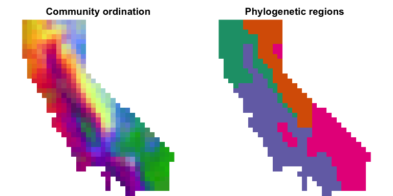
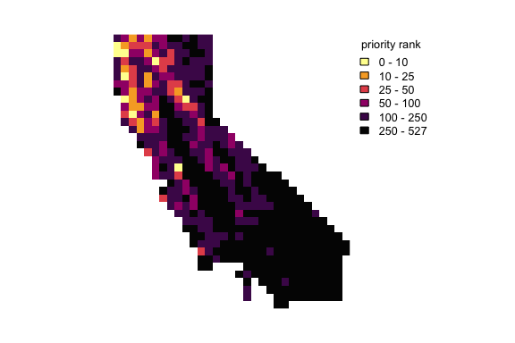

phylospatial is an R package for spatial phylogenetics: mapping and analyzing biodiversity in a way that accounts for the evolutionary relationships among taxa. The package is built around the “phylogenetic diversity” family of metrics, which count each clade or branch segment on the phylogeny rather than giving primacy to the terminal species. It covers the full workflow, from building data sets to mapping diversity and endemism, testing significance against null models, comparing communities, delineating bioregions, and setting conservation priorities. It is designed to be flexible:
- Any kind of occurrence data. Binary presence-absence, abundances, or continuous occurrence probabilities such as species distribution model predictions. Every analysis uses quantitative values directly rather than thresholding them, which avoids information loss and enables analyses not available in other spatial phylogenetic R packages.
-
Any spatial format. Raster grids (
terra), polygons or points (sf), or occurrence records converted to a grid withps_grid(). Results come back as maps ready to plot. -
A wide range of null models. Randomizations from
veganandnullcat(including stratified algorithms designed for quantitative data), custom functions, and spatially constrained null models that test whether sites are unusual relative to their neighbors. - Not just for phylogenies. Leave out the tree and the same tools perform conventional, non-phylogenetic analyses of richness, endemism, beta diversity, bioregions, and conservation priorities. Or supply another kind of tree, such as a taxonomic hierarchy or a functional trait dendrogram.
Installation
# install the package from CRAN:
install.packages("phylospatial")
# or the development version from GitHub:
remotes::install_github("matthewkling/phylospatial")Building a data set
Analyses start from a phylospatial object, created by phylospatial() from a community data set (a SpatRaster or sf object with a layer or column per taxon, or a site-by-taxon matrix) and a phylogeny. If your data are occurrence points, ps_grid() converts them to a raster data set first. The package includes an example data set of occurrence probabilities for 443 moss species across California, along with their phylogeny, which we’ll use here:
library(phylospatial)
library(terra)
ps <- moss()
ps
#> `phylospatial` object
#> - 884 lineages across 527 occupied sites (1116 total)
#> - community data type: probability
#> - branch length rescaling: sum1
#> - site weights: equal
#> - spatial data class: SpatRaster
#> - dissimilarity data: noneSee vignette("phylospatial-data") for details on constructing data sets.
Alpha diversity
ps_diversity() calculates a suite of richness, divergence, and regularity metrics, including phylogenetic diversity (PD) and phylogenetic endemism (PE):
div <- ps_diversity(ps, metric = c("PD", "PE"))
plot(div, axes = FALSE)
ps_rand() tests these metrics against a null model, and ps_canape() uses the results to classify sites into centers of neo- and paleo-endemism (CANAPE). There are a range of null model algorithms available for different hypotheses and data types; see vignette("alpha-diversity") for details. Here’s a quick version with 1000 randomizations and a modest number of burn-in iterations. Adding site_groups = ps_tile_groups(...) would make the null model spatially constrained, comparing each site only to its surroundings rather than to the whole study area.
rand <- ps_rand(ps, metric = c("PD", "PE", "CE", "RPE"), n_rand = 1000,
fun = "quantize", method = "curvecat",
transform = function(x) log10(x + 0.001),
n_iter = 30000, n_cores = 8, progress = FALSE)
par(mfrow = c(1, 2))
plot(rand$qPD, axes = FALSE, main = "PD null quantile")
canape <- ps_canape(rand)
plot(canape, axes = FALSE, main = "CANAPE")
Beta diversity
ps_dissim() computes various measures of phylogenetic dissimilarity between sites, with options to partition it into turnover and nestedness, weight lineages by endemism, and compare a focal site to every other site (ps_dissim_focal()) or each site to itself in another data set (ps_dissim_paired(), for example to measure change over time). Dissimilarities feed into ordination (ps_ordinate(), ps_rgb()) and bioregionalization (ps_regions()), and can be used in a wide range of analyses such as GDM and PERMANOVA tests. Here, sites with similar colors on the left have similar lineage composition, and the map on the right groups sites into four phylogenetic regions:
ps <- ps_add_dissim(ps, method = "sorensen", endemism = TRUE, normalize = TRUE)
rgb <- ps_rgb(ps, method = "cmds")
regions <- ps_regions(ps, k = 4, method = "average")
par(mfrow = c(1, 2))
plotRGB(rgb, scale = 1, smooth = FALSE, mar = c(0, 0, 2, 0),
main = "Community ordination")
plot(regions, type = "classes", col = palette.colors(4, "Dark 2"), legend = FALSE,
axes = FALSE, mar = c(0, 0, 2, 0), main = "Phylogenetic regions")
See vignette("beta-diversity") for more.
Conservation prioritization
The package includes two approaches for computing optimal reserve networks that protect evolutionary diversity while accounting for existing protected areas, the cost of protection, and complementarity among sites: ps_prioritize() finds a nested ranking of sites, while ps_prioritizr() sets up a prioritizr problem that finds optimal solutions for a given budget or target. ps_performance() traces how conservation value accumulates along the ranking. Here, low ranks (yellow) are the highest priorities for expanding California’s protected areas to conserve moss lineages:
protection <- moss(data = "protection") # existing protection level of each site
cost <- 1 + log1p(moss(data = "popdens")) # population density as a proxy for cost
priority <- ps_prioritize(ps, init = protection, cost = cost, progress = FALSE)
rank_breaks <- c(0, 10, 25, 50, 100, 250, global(priority, "max", na.rm = TRUE)[[1]])
plot(priority, breaks = rank_breaks, col = rev(hcl.colors(6, "inferno")),
axes = FALSE, plg = list(title = "priority rank"))
Learn more
The package website has full documentation and four vignettes:
-
vignette("phylospatial-data"): constructingphylospatialdata sets from different types of data. -
vignette("alpha-diversity"): alpha diversity and endemism metrics, null model randomization, and CANAPE. -
vignette("beta-diversity"): phylogenetic dissimilarity, ordination, and regionalization. -
vignette("prioritization"): conservation prioritization withps_prioritize()andps_prioritizr().